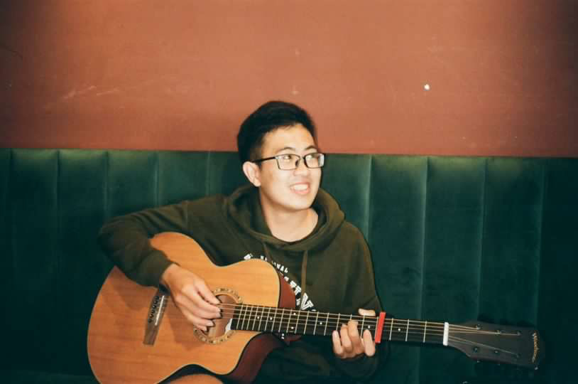

About Me

I am Eng-Shen (James) Tu, currently a Software Engineer at Appier. I received my B.S. in Computer Science and Information Engineering from National Cheng Kung University (NCKU), Taiwan in 2024, and I will be pursuing my PhD in Computer Science at Cornell University starting Fall 2026.
My research interests are broadly centered on Reliable and Trustworthy AI for Software Engineering, including reliable agentic workflows, human-centered AI systems for software development, and cognitive reliability in LLMs.
You can reach me anytime or connect with me on
LinkedIn.
I'm also happy to chat about PhD applications, research, or just to meet! Schedule a coffee chat here: Google Calendar
Research Interests:
- Reliable and Trustworthy AI4SE
- Cognitive Reliability in LLMs
- Human-Centered AI Systems and Agentic Workflows for Software Development
- AI for Automated Software Testing
What I do outside of research:
Volleyball, Music, Chess, Casual Model UN
Explore my Model UN ExperienceUpdates
News
- April 2026: Our paper OmniCode: A Benchmark for Evaluating Software Development Agents has been accepted to ACL Findings.
- April 2026: I am happy to announce that I will be joining Cornell University as a Computer Science PhD student this upcoming Fall!
- March 2026: I am fortunate to have received offers from UIUC, Cornell, and Columbia, all of which are amazing schools! I am actively looking for second opinions on evaluating fit for my PhD and would love to chat with others navigating this process as well.
- Feb 2026: We have just released OmniCode: A Benchmark for Evaluating Software Engineering Agents!
- November 2025: I have decided to apply to graduate schools and am looking for PhD positions!
- November 2025:
- Invited as keynote speaker for the Statistics Department at NCKU Alumni Homecoming.
- My Information Retrieval Research Group at the NYCU GDG has officially kicked off!
- October 2025: I have started working as a full-time Software Engineer at Appier.
- September 2025: Acceped invitation to join GDG @ NYCU as Project Leader once again.
- August 2025: Won 2nd Place (Practical Impact Award) at Appier Hackathon for building QAgent.
- July 2025: Returned to Appier as Quality Assurance Intern.
- June 2025:
- Began work on OmniCode at Cornell University, a benchmark for software development agents.
- CoverIQ has released 2 projects: Figma UI Test Planner and Local Unit Test Support!
- CoverIQ won 3rd Place at the TCSE Software Engineering Competition!
- May 2025:
- Recruited engineering team for CoverIQ, welcoming Hank Chen(UIUC), Rex Yeh(NYCU), Claire Lin(Keio), and Wilson Liang(Columbia) onboard.
- Selected for Cornell SE Group Summer Research Program under Prof. Dutta.
- April 2025: Completed mandatory military service (53rd Engineering Group).
- January 2025: JISE journal paper published on input relation prompting.
- December 2024: Entered Taiwan mandatory military service.
- August 2024: Appointed Project Leader for the LLM Research Group for GDG @ NYCU.
- July 2024: Presented COMPSAC 2024 paper in Osaka, Japan.
- May 2024: Led team to 2nd Place + Popularity Award at the Taipei Metro Hackathon.
- November 2023: Selected for the government-funded TCA International Talent Program (Top 1%). Completed internship at SEAMEO RECSAM in Malaysia; received Global Supernova Award.
- June 2023: Won Best Paper Award at TCSE 2023.
- May 2023: Completed senior project on RLAIF for code generation (45% improvement across 145 tasks).
- December 2022:
- Won 2nd Place globally in IEEE Big Data Cup.
- First-author IEEE Big Data paper published.
- October 2022: Won MediaTek Better Future Award at NASA SpaceApps Challenge for multimodal text-to-image system.
- 2020: Built Class Info Collector CLI for NCKU; deployed for internal use by Office of International Affairs.
Education
Cornell University
PhD in Computer Science, Sep 2026 – June 2031 (expected)
National Cheng Kung University (NCKU)
B.S. in Computer Science and Information Engineering, Sep 2019 – June 2024
Publications
Google Scholar ORCID- OmniCode: A Benchmark for Evaluating Software Engineering Agents.
Atharv Sonwane*, Eng-Shen Tu*, Wei-Chung Lu*, ..., Kevin Ellis, Saikat Dutta.
arXiv
ACL Findings (accepted)
- Input Relation Prompting for Metamorphic Testing on Query-Based Systems.
Eng-Shen Tu, Shin-Jie Lee.
Journal of Information Science & Engineering
- A Clustering-Based Approach for Detecting Low-Contrast Texts on Web Pages..
Eng-Shen Tu and Shin-Jie Lee.
2024 IEEE 48th Annual Computers, Software, and Applications Conference
- Real-Time Compressed Sensing for Hyperspectral Images.
Chih-Chung Hsu, Chih-Yu Jian, Eng-Shen Tu, Chia-Ming Lee, Guan-Lin Chen
IEEE Transactions on Geoscience and Remote Sensing
- An Embarrassingly Simple Rule-based Visiting Circulation Approach to Trip Destination Prediction.Eng-Shen Tu, Yong-Han Chen, En-Chao Liu, Hao-Yun Keng, Cheng-Te Li 2022 IEEE International Conference on Big Data
Research Experience
Research Intern — Cornell University
Advisor: Assistant Professor Saikat Dutta
June 2025 – Jan 2026
- Contributing to OmniCode (formerly CodeArena), a project funded by the Meta AI LLM Evaluation Research Grant 2025.
- Contributed to an LLM software development agent benchmark supporting Python, Java, and C++ across bug fixing, test generation, review response, and style fixing.
- Implemented multilingual support, dataset construction, and task evaluation; collaborated on pipeline design and integration.
Researcher — NCKU, Software Engineering and Intelligent Test Automation Lab
Advisor: Associate Professor Shin-Jie Lee
Mar 2022 – Jul 2024
- Conducted research on software test automation, metamorphic testing, and quality assurance.
- Proposed input relation prompting for addressing the Oracle problem in query-based systems; awarded Best Paper at TCSE and published in JISE.
- Developed a DBSCAN-inspired clustering technique for web UI accessibility testing, achieving 80% precision; published in IEEE COMPSAC 2023.
Undergraduate Researcher — NCKU, Intelligent Knowledge Management Lab
Advisor: Professor Hung-Yu Kao
Sep 2022 – Aug 2023
- Investigated reinforcement learning and generative AI for code generation and NLP applications.
- Designed an iterative RLAIF fine-tuning framework for code generation, improving pass rates by 45% on 145 tasks.
- Co-developed a space-themed text-to-image system for NASA imagery; won the MediaTek Better Future Award at the 2022 NASA SpaceApps Hackathon.
Part-Time Research Assistant — NCKU Institute of Data Science
Advisors: Associate Prof. Chih-Chung Hsu; Professor Cheng-Te Li
May 2022 – Feb 2023
- Worked on hyperspectral image reconstruction for miniaturized satellites; co-author on IEEE Transactions on Geoscience and Remote Sensing (TGRS).
- Collaborated on graph-based ML prediction for trip destination prediction; ranked 2nd globally in IEEE Big Data Cup 2022 and presented as first author at IEEE BigData 2022.
Work Experience
Software Engineer — Appier (AI-driven SaaS company)
Jul 2025 – Present • Taipei, Taiwan
- Tasked with QA automation for AI-driven SaaS products (AIRIS, BotBonnie).
- Designed a UI testing agent pipeline combining Web UI agents and MCP orchestration for self-healing, resilient E2E suites.
- Built QAgent, a harnessed LLM-powered pipeline for context-aware test plans and test cases; adopted internally company-wide.
- Won 2nd Place (Practical Impact Award) at the 2025 Appier Hackathon and promoted from Intern to Software Engineer.
- Mentored QA/SDET interns on software testing and automation practices.
Taiwanese Army — Mandatory Military Service
Dec 2024 – Apr 2025
- Served in the 53rd Engineering Group.
Quality Assurance Intern — Appier
Nov 2023 – Aug 2024 • Taipei, Taiwan
- Contributed to test case automation and CI/CD pipeline maintenance, increasing test coverage by 20%.
- Conducted test planning, bug triage, and data pipeline troubleshooting across 19 Agile sprints.
Software Development Intern — SEAMEO RECSAM
Sep 2023 – Nov 2023 • Penang, Malaysia
- Selected for the government-funded international talent program (Top 1%) hosted by the Talent Circulation Alliance (TCA).
- Led full-stack development of a makerspace website and facilitated workshops to promote international talent exchange.
Past Projects
CoverIQ — AI-Powered Software Testing Solutions
2025 • Team Lead
- Before “harness engineering” became a common term, I designed products around the same core principle: LLM reliability in workflows comes from the engineered system around the model, not the model alone.
- Managed a 5-person engineering team and coordinated system architecture, design, and development.
- Figma UI Test Planner: LLM harnessing framework + Figma component parsing to generate test plans and BDD-style cases.
- Local Unit Test Support: LLM harnessing framework + RAG + AST for automated unit test generation and refactoring.
Herewegoal — Lightweight Productivity Tool for Project Management
2025 • Product Manager
- Founded by Justin Li and awarded 1M TWD in funding through the Jamie Gap Year Program.
- Led product planning and design for project-tracking interface, collaboration features, and task visualization.
MRT Pet Project — 2nd Place @ Taipei Metro Hackathon
2024 • Team Lead
- Proposed an AI-personalized MRT companion app to improve rider engagement.
- Led team of 5; recognized among 90+ teams for innovation and usability.
RLAIF for Code Generation — Senior Project
2023
- Achieved 45% pass-rate improvement on 145 Python coding tasks through RLAIF fine-tuning.
JTHankAI — NASA SpaceApps Hackathon
2022 • Team Lead
- Developed a multimodal text-to-image + style-content fusion system for NASA’s imagery dataset.
- Won the MediaTek Better Future Award.
Class Info Collector — CLI Tool
2020
- Scraped and organized university course data; deployed internally to NCKU Office of International Affairs.
Awards and Honors
- Practical Impact Award — 2nd Place, Appier Hackathon (Aug 2025)
- 3rd Place, TCSE Software Engineering Competition (Jun 2025)
- Second Place and Popularity Award, Taipei Metro Hackathon (May 2024)
- Global Supernova Award (Top 1%), Government-Funded TCA International Talent Program (Dec 2023)
- Best Paper Award, 19th Taiwan Conference on Software Engineering (TCSE) (Jun 2023)
- Second Place, IEEE Big Data Cup: Trip Destination Prediction Challenge (Dec 2022)
- MediaTek Better Future Award, NASA International Space Apps Challenge (Oct 2022)
Leadership & Service
Google Developer Group OnCampus — NYCU
Group Leader, Agentic AI Research Group (2024 – Present)
MUN Society Taiwan
Director (2021–2025)
Harvard Undergraduate Taiwan Leadership Conference
Head Teaching Assistant (2022, 2024)
NCKU Statistics Department Women’s Volleyball Team
Head Coach (2022–2024)
Harvard WorldMUN Conference
Assistant Chair (2024)
NCKU Blockchain Club
Director of Research (2021–2022)
Hult Prize at NCKU
Founder & Campus Director (2020–2021)